A Lufa-Lufa, fundada por Helga Hufflepuff, é uma das quatro casas da Escola de Magia e Bruxaria de Hogwarts, sendo conhecida como a mais inclusiva entre as outras três; valorizando o trabalho árduo, a dedicação, a paciência, a lealdade e o jogo limpo ao invés de uma aptidão particular de seus membros. Seu animal emblemático é um texugo e suas cores são o amarelo e o preto. A diretora da casa mais notável é a Mestra de Herbologia Pomona Sprout e seu fantasma patrono é o Frei Gorducho. A casa corresponde aproximadamente ao elemento terra, e é por essa razão que suas cores foram escolhidas: o amarelo representa o trigo, enquanto o preto um símbolo do solo.
Helga Hufflepuff
Helga Hufflepuff foi uma bruxa galesa nascida por volta de 976 e uma das quatro fundadoras da Escola de Magia e Bruxaria de Hogwarts. Enquanto o restante dos instituidores prezavam por características especiais em seus alunos, Helga aceitou a todos sem preferência, embora quisesse que eles fossem leais e dedicados. Seu retrato permaneceu no castelo pelo menos durante a década de 1980.
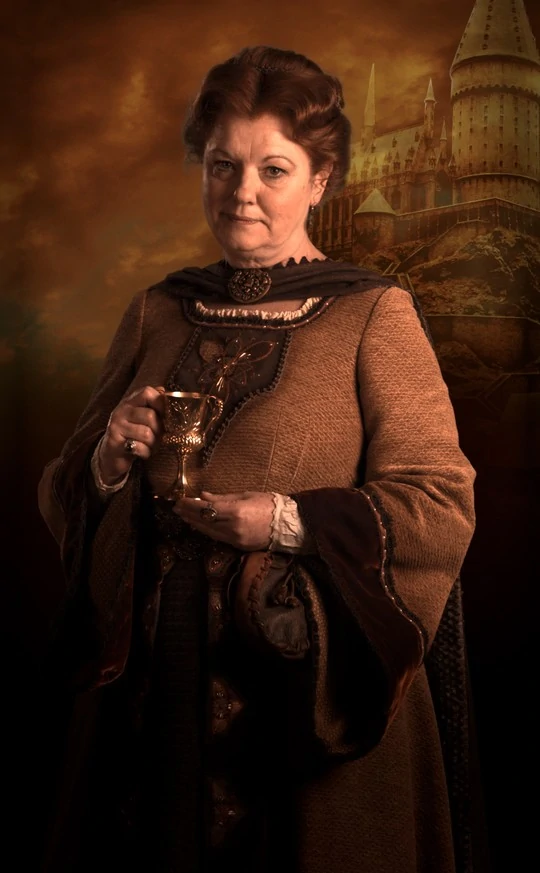
Artefato mágico
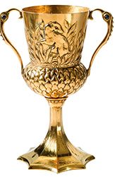
A taça de Helga Hufflepuff foi um item mágico criado pela fundadora da Casa Lufa-Lufa. Era um pequeno cálice dourado com duas alças e o relevo de um texugo ao centro. Acreditava-se, que o objeto possuísse poderes mágicos, embora a natureza exata dessa magia não seja conhecida. Representa o orgulho de Helga Hufflepuff, lealdade e justiça.
Lufanos
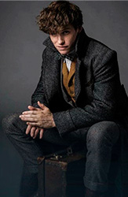
Newton
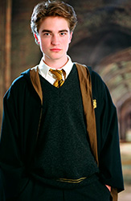
Cedrico Diggory
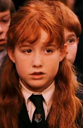
Susana Bones
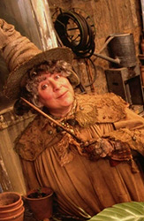
Pomona Sprout
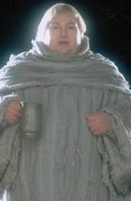
Frei Gorducho
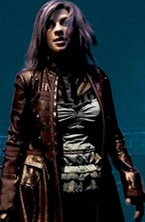
Ninfadora Tonks
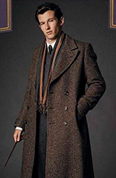
Theseus
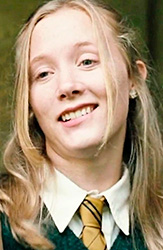
Hannah Abbott
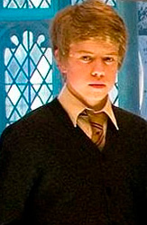
Zacharias Smith
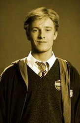